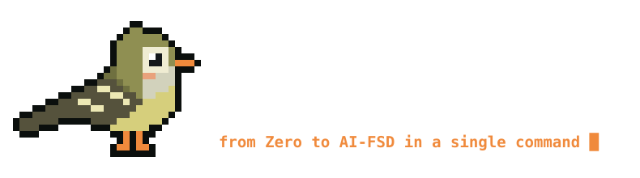
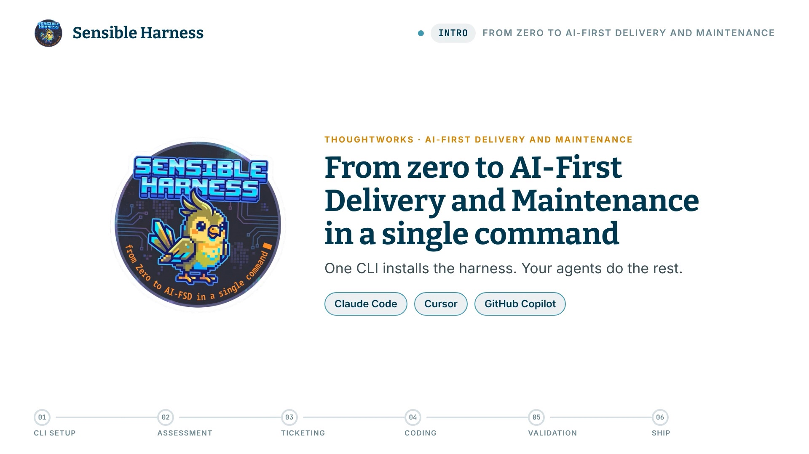
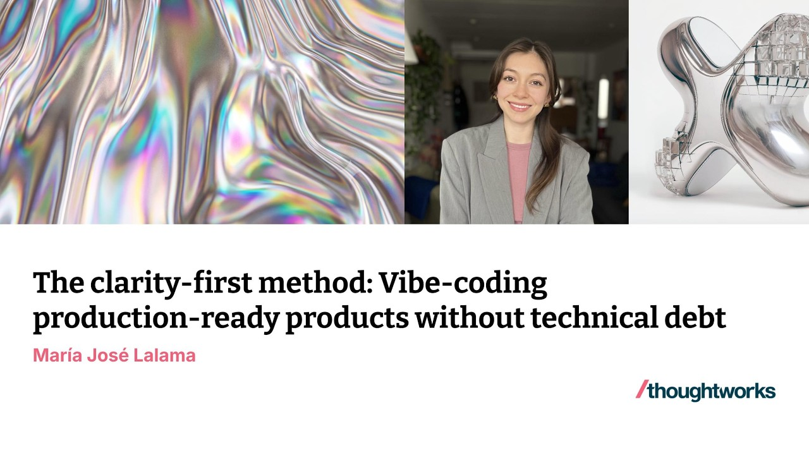

Gates the agents
can't skip
Sharing our Harness for AI Delivery and Maintenance
María José Lalama · Vitória Toebe
Claude Community · Barcelona
 Inspired by Sensible Harness, built for the Thoughtworks AI Hackathon 2026
Inspired by Sensible Harness, built for the Thoughtworks AI Hackathon 2026
Who we are

Amy Pellegrini
Lead Developer
AI-First Software Delivery

Maria Jose Lalama
Senior AI Product Researcher
AI/Works™

Vitória Toebe
Lead Developer
AI-First Software Maintenance
Everyone uses AI. Nobody uses it the same way.
Access to AI isn't 10× productivity. Generation scales; human review doesn't.
Ad hoc usage
Every team rebuilds its own harness. Learned on the run, absent from capacity planning.
The evaluation gap
Cognitive debt: AI produces faster than humans can review. We need to build trust to not need to review every line.
No guardrails, no visibility
No shared conventions, no audit trail, no view of how ready a repo is for agents. Adoption turns fragmented, risky, hard to scale.
Turn any repo into a governed AI-first environment
fioh-init▸
agent-ready repo
Modular CLI
One command bootstraps any git repo
Guardrails, not suggestions
Agents and engineers run on the same track
Battle-tested engineering practices
As a behavioural agentic harness
Scale AI adoption without scaling the chaos.
Delivery practices we already trust
The agent follows them; it doesn't replace them.
Iterative development
Small slices, shipped and reviewed. Course corrections happen early, not at the end
TDD
Test-driven development: red, green, refactor
Test pyramid
Many unit tests, fewer integration, fewest end-to-end. Suites stay fast and trustworthy
Small commits
Atomic and conventional. Each one explains itself and reverts cleanly
Human on the loop
A human decides how much to delegate and when to validate
CI/CD
Catches defects before they reach production
What it delivers
init doctor▸Skills small, reusable▸Agents BA · Dev · QAhaiku 15 skills · mechanical
commit · open-pr · check-ci · pickup-issue · jira · track-tokens · onboarding
sonnet 19 skills · judgement
tdd · close-issue · address-pr-comments · qa-test · the assess-* skills
The description is the trigger and model: pins the model. One job per skill, so each one can run alone, be chained, or be handed to an agent.
Pick your role
DEV /onboard-dev
Dev agent and the delivery skills: pickup, tdd, commit, PR, CI, close
QA /onboard-qa
QA agent and assessments: pyramid, CI, pre-commit, qa-test
BA /onboard-ba
BA agent and how issues flow into delivery
Each one ends with: run /assess-repo
Before going AI-first, know your repo
/assess-repo scores the repo across 10 dimensions, so you know how much you can trust agents on it
Your standards first. Thoughtworks defaults only where you have none.
Dashboard
Score, band and blockers on one page. Blockers cap the band.
10 reports
One per dimension, every finding cited to a file and line
Gaps become tickets, and the next assessment shows how things have changed.
The assessment writes the onboarding
Generated from this repo’s own analysis. Not a template.
/onboard-me · understand the repo
Architecture, how to test and ship, known traps, what agents must not do alone
/setup-workspace · get it running
Prerequisites in order, install each service, verify, ask before changing your machine
Same context for people and agents. Generated, then owned: committed Markdown your team edits.
The BA agent guards the ticket
- Mandatory checklist: Context · Scope · Acceptance criteria · Out of scope · Dependencies
- Asks with
AskUserQuestionwhen scope is unclear - Jira through
acli, using thejiraskill's commands, never from memory - Assessment gaps arrive with their questions as Context
Dev agent: plan first
/dev GV-n▸Ticket check▸Branch▸Plan▸👤 Approve▸Saved to ticket- One plan step per acceptance criterion
- One round of changes before approval
- Nothing runs until a person approves the plan
One spawn, one model, per step
# same prompt shape for every spawn Load .claude/skills/<skill>/SKILL.md and follow it exactly. Inputs: <verbatim from the plan>
- Full test suite between
tddsteps - Stop and ask on any failure
- Never re-scope the plan: replan with the human
Five places the agent has to stop
If the ticket is incomplete
→ it won't start
👤 BA / humanIf there's no approved plan
→ it won't write code
👤 humanIf the test passes the first time
→ it breaks the code to prove the test works
🤖 self-checkIf an AC isn't covered
→ it won't merge
👤 humanIf CI is red
→ it won't merge
⚙ CIQA verifies. close-issue
qa-test
- Test plan from the ACs: happy path, edge, negative
- Runs the feature; verdict to issue + PR
- Recommends fixes, never applies them
close-issue
- Pass/fail per AC against the diff
- Any AC unverified or CI failing → no merge
- Squash-merge, then post token spend
Every step metered, cost on the ticket
◧Model per skill
Configured in the skill itself
$Spend on the ticket
Token report posted at task completion
✓No surprises
Per-model breakdown and cost estimate
- Enterprises see where the AI investment actually goes
- Teams optimise their usage and tailor their own harness
- PMs measure agent cost alongside delivery velocity
AI-first software maintenance
One connected view across your ecosystem finds the root cause faster, and with more certainty
region from service-b’s responseregion (change 3f2a)3f2a removed region from service-b’s response. service-a still requires it.region, add a contract testWhat others focus on, what we add
① CLI connection
One init wires your agent platform and issue tracker, recorded in the manifest
② Assessment
10 dimensions, score, band and blockers before agents touch the repo
③ Onboarding & setup
Role onboarding, project onboarding from the assessment, /setup-workspace
④ Tracked steps
Checked ticket, approved plan and AC verdicts, all on the ticket
⑤ Cost awareness
Model pinned per skill, spend posted on the ticket
Good practices, built in
None of these are new. We put them in the tool because "remember to do it" didn't hold up once agents joined the team.
Assess before you delegate
Score the repo first. Blockers cap the band; the score stays comparable.
AI onboarding for every role
People are becoming AI product engineers. Role onboarding brings product and BA closer to the code.
A clear ticket comes first
When the ticket is vague, people ask and agents guess. Every ticket goes through the same checklist.
Small steps, checked as you go
One acceptance criterion at a time, test first, small commits. Nothing merges unless CI is green, so main stays deployable.
The right model for each job
Commits and PRs don't need the biggest model. Each skill names its own.
Every gate leaves a trace
Approved plan, AC verdicts and token cost on the ticket, where the team already looks.
Your process lives in the repo
Agents and skills sit next to the code: versioned, reviewed and improved like code.
Build your own
Every team works differently. Write your way down once; nobody skips a step, because the steps are how the agent runs.
Want to go deeper?

Thoughtworks blogHow Sensible Harness can help teams create an AI-first delivery environment
Amy Pellegrini · María José Lalama · Vitória Toebe XConf Europe 2026 · talk
XConf Europe 2026 · talk
AI-First Software Maintenance & AI-First Software Delivery
Vitória Toebe · Amy Pellegrini
XConf Europe 2026 · talk